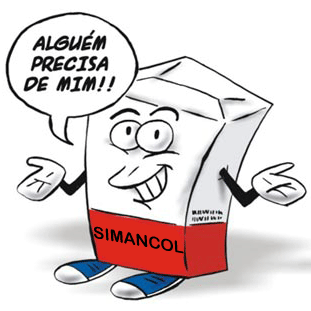

Simancol(){
Dicas
Por: Fellipe Augusto Alves Gurgel

Retirado de: Blog These Days
SIMANCOL:
Medicamento altamente recomendado para pessoas ingênuas ou ignorantes.
Sem necessidade de receita médica e de fácil aplicação, o Simancol pode ser utilizado quando forem diagnosticados:
- Falta de tato ou percepção;
- Escassez de educação;
- E o principal: deficiência no SENSO DE OPORTUNIDADE.
Recomenda-se o uso diário desse "medicamento". Resultados obtidos incluem o ato ou efeito de reconhecer os próprios erros ou a ingenuidade de suas atitudes. Sarcasticamente falando.
Referências:
}